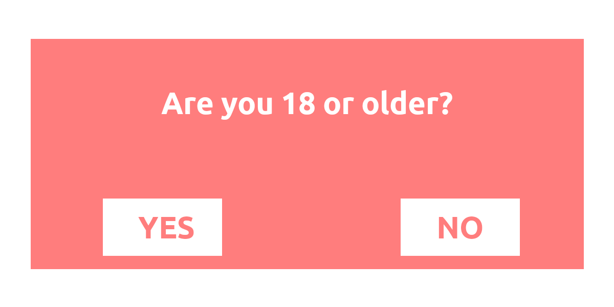
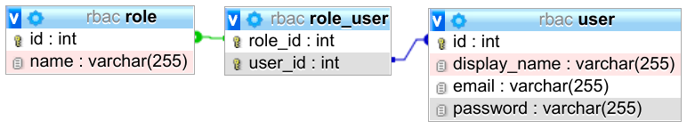

Access control is the act of restricting access to a selected group of people or systems. That group is authorized to access the system. To check if a person is authorized to access, the person typically has to be authenticated.
In this article, I focus on web services. Access to physical systems like your notebook / full disk encryption is a different story. And access to buildings/tailgating is yet another story.
In the context of access control, one typically speaks of those entities:
- Subjects: People like my girlfriend/Obama/my neighbor; organizations like the NSA; companies like GitHub/Google/Facebook; software like bots
- Objects: Partitions, files, databases, database schemas, database tables, …
- Rights: Read, write, modify/alter, delete, add/insert, append, enter, execute, …
For example, my girlfriend has permission to enter my house. In this case, my girlfriend is the subject, the object is “house” and the right is “enter”.
In this article, you will get to know how access control can be broken, different types of access control, and finally some tricks for effective access control. Let’s start!
How can access control be broken?
Many things can go wrong in access control and some of them are very hard to automatically check. This is the reason why broken access control (BAC) is number 5 in the OWASP Top 10 2017.
Hiding a system isn’t secure
The (implicit) assumption that some systems or data don’t need access control
because they are never (purposely) exposed to the public is a common mistake.
I’m thinking here of AWS S3 buckets where people just let everybody upload. The
thought here is that people need to know the name of the bucket and no one
would just try s3://company-data or similar.
Another attack that goes in this direction is called insecure direct object
reference (IDOR). Imagine you wanted to download an invoice from Amazon and
found that it was downloaded from https://amazon.com/invoice/1234/invoice.pdf.
Wouldn’t you be curious about what
https://amazon.com/invoice/1233/invoice.pdf
contained? It could very well be that this would be an invoice of a different
person. And it could be that there is no more access control performed.
Forgetting to apply access control
Many backend systems have dozens of routes. All of them need to apply access control. It depends on the implementation of your access control system, but it could be that you need to add code to every route which is not public. This makes it easy to forget. And it's easy to miss in a code review that it was forgotten, even if everybody agrees that the route needs access control.
Client-side access control

Age verification for adult content is a typical example of client-side access control. Image by the author.I haven’t seen client-side access control in a long time, but please don’t forget: Access control needs to be done server-side. I have never seen effective client-side access control for web systems.
Trusting the client
Authentication typically means that the user needs to enter a username/email and a password. Then the server creates either a session or a token to remember that user. We don’t want the user to have to authenticate again and again.
Typically, there are at least 3 levels of users:
- Anonymous users
- Registered users
- Admins
The admins are also registered but have more privileges than all other users. The system needs a way to distinguish the admin from normal users.
Sometimes, this is done with an unsigned cookie. Hence, we store the information
whether the user is an admin on the client. Non-malicious users will not tamper with
that information and thus the browser tells us with every request “I’m not an
admin”. But malicious users can change that cookie. By changing the is_admin
cookie from is_admin=false to is_admin=true, they perform a privilege
escalation.
There are two typical ways around it:
- Cryptographically sign this information and check the signature with every request
- Store that information on the server and look it up when you receive the cryptographically signed user id.
Storing the information on the client has the advantage that you might be able to save some requests to the database.
Storing the information on the server has the advantage that a loss in privileges will instantly be effective.
Missing Expiration Date
Imagine this: Your company has a system for employees. Most employees can only see their payslip, but team leads can also see the payslip of their team. Team leads also can give rewards to well-performing employees. You are a team lead. You use that system daily and you never log out. At some point, you get promoted. You are no longer a team lead. Hence, you should no longer be able to see your former team's payslips. But you do.
If the system stores the authorization and the role in a token that never expires on the client, the client could use that token forever. As some of your systems might rely on that token being correct, they never check another source. The cryptographic signature is right and thus the token is trustworthy. And it was. Until the contained information changed.
Broken Authentication Control
If you can authenticate as another user, you will get all rights of that user. It’s not really broken access control but has the same effect. I’ll write a couple of articles about authentication:
- Password Hashing 😇
- Multi-factor authentication — yet to be written!
- Single sign-on — it’s on my list, buddy 🤞
- OAuth and OpenID — you guessed it… it’s on the way 😅
Access Control Policies
The following access control policies deal with slightly different problems. I’m not talking about specific technologies here, but the abstract concepts which many implementations use.
Discretionary Access Control (DAC)
You can formally store all rights as tuples (Subject, Object, Right). You can
store those tuples either as a matrix or as a list of tuples. Or you can do it
object-centric and store a list of all subjects with their rights. For example,
for the file foobar.txt you could store Alice:read,write; Bob:read. This is
called an Access Control List (ACL). You can also store that information
subject-centric: For each user, store what the user can do. That is called a
Capability List (C-List). It’s still the same information, but another data
structure.
The “discretionary” part is that the users are allowed to change the permissions of an object.
Mandatory Access Control (MAC)
In the case of DAC, the rights did not have any relation to each other. This is
different in MAC. For MAC, the rights are ordered: public < confidential <
secret < top secret. Users have a clearance and objects have a classification.
If Bob has a “secret” clearance, he is allowed to read documents that are
classified as “secret”, “confidential”, or “public”. MAC is used by SELinux and
AppArmor.
In contrast to DAC, in the MAC case, users are not allowed to change the permissions. The permissions are set by the system administrator.
Role-based Access Control (RBAC)
Assigning permissions to subjects directly might be a lot of administrative work. Instead, you can create a role, e.g. “team lead”, “quality assurance”, “developer”, “accounting”, “CTO”. Every subject can have an arbitrary number of roles. Roles have rights for objects. For example, for “others’ salaries”, the role “CTO” might have the right to “read” and “edit” it. For a given object, the rights of a subject are the set of all rights of all roles that the user has. RBAC is used by all content management systems (CMS) I know. Famous examples are Wikipedia, Reddit, and Stack Exchange.
To apply RBAC, you need a role table (could also be called group) and a table
that connects users with groups:

Image by authorThen you need to get all roles a user has:
SELECT role_id FROM role_user WHERE user_id = :current_user
You might want to cache this query as you will execute it a lot and the roles might not change that quickly.
The last ingredient is to store an access control list per route. In Flask, it could look like this with Flask-User:
@app.route("/analytics", methods=["GET"])
@roles_required("admin")
def analytics_route():
return {"some": "analytics_data"}
When this route is called, the @roles_required decorator first executes the
access control code. If the user doesn’t have access, the rest is ignored and
an exception is thrown or an error response is returned.
RBAC can be combined with either DAC or MAC. For web applications, it’s typical
that the objects (the routes) have some fixed roles they require. Only the
developers can change them. They are fixed in the code, not in a database. The
decorator @roles_required("admin") here is an ACL.
Attribute-based Access Control (ABAC)
One part that is missing for RBAC is context. You want to use the relationship between the subject and the object, e.g. if the subject is the creator of that object, it might automatically grant the subject some rights. Or depending on the time or location, the rights might change. For example, normal employees might not be allowed to access the office between 11 pm and 5 am.
We don’t want to fire too many requests against our database, give meaningful error responses, and not repeat code. A good compromise could be this pattern:
@app.route("/article/<article_id>", methods=["PATCH"]) # execute (1)
@get_article # execute (2)
@attribute_required(is_author) # execute (3)
def edit_article(article: Article): # execute (4)
... # update the article
The get_article decorator simply uses the ORM:
from typing import Any, Callable
from functools import wraps
def get_article(func: Callable) -> Callable:
"""
Make the variable "article" available.
Parameters
----------
func : Callable
Needs to have an 'article' keyword parameter.
Returns
-------
modified_func : Callable
A function where the parameter 'article' is added to
the signature
"""
@wraps(func)
def wrapper(**kwargs: Any) -> Any:
article_id = kwargs["article_id"]
article = get_article_from_db(article_id)
kwargs["article"] = article
return func(**kwargs)
return wrapper
The is_author function is then pretty straightforward:
def is_author(article: Article, user: User) -> bool:
return article.author_id == user.id
More complicated is the design of attribute_required, but in principle, it works similarly to the decorator above.
Why RBAC/ABAC with Decorators is great
Let’s say you build the e-commerce website eBay. One entity is an auction. It has various attributes:
- Auction ID: Set by the system, immutable
- Seller ID: Set by the system, immutable
- Title: Set by the user, immutable
- Description text: Set by seller, editable by seller
You could implement the change_description_text function like this:
def change_description_text(id):
auction = Auction.query.filter(Auction.id == id).first()
if current_user.id != auction.seller_id:
raise PermissionDeniedException("Only the seller may edit")
Then you realize that admins should always be able to change it:
def change_description_text(id):
auction = Auction.query.filter(Auction.id == id).first()
is_seller = current_user.id == auction.seller_id
is_admin = is_admin(current_user)
if not (is_seller or is_admin):
raise PermissionDeniedException("Only the seller may edit")
And you might realize that you also should check for moderators. And maybe you allow companies to sell as well. So not only the person who put it in the shop but also moderators of that company should be able to adjust description texts. And then you realize that there is metadata such as weight/volume of the item as well. The mentioned access control just has too many places in which the developers can get things wrong.
Instead, you can use roles. For example, seller sounds like a role. The roles can be context-dependent.
@requires_role([SellerRole(id), AdminRole(), ModeratorRole()])
def change_description_text(id):
auction = Auction.query.filter(Auction.id == id).first()
Tricks to make Access Control Effective
The case of creating web services is certainly most interesting to most readers, so let’s focus on that. Access control is enforced in the backend and hence typically on the API level. It’s most of the time about which users can call which API endpoints, but sometimes it can be more complicated. For example, in a social network, every user might be allowed to get the list of friends of another user. But you might only see the birthday if you are a friend of that user yourself. Hence some endpoints might be callable but deliver different data depending on the caller.
For now, let’s just focus on the simple case with a REST API. If you have the permission to call an endpoint with a given set of parameters, then you will always get the same result. No matter who you are / which role you have. The only right we care about for now is “can call”. Our subjects are “users” and our objects are the combination (route, parameter).
In such a scenario, you will typically want to make a role-based system. There are some simple principles that can help:
- Deny by default: It’s easy to add a new route somewhere. Make sure that people don’t leak data by not allowing any access whatsoever by default. Make them write down which roles are allowed.
- DRY: Don’t repeat yourself. Implement the access control code once and make it simple to check without copy-pasting the implementation. In Python / Flask, you typically want a decorator over your function to denote the allowed roles.
- Least privilege: Don’t give people roles they don’t need. Don’t give roles permissions they don’t need. Remove roles from people if they leave — no matter if they leave the job or just that role. The fewer people have access, the less potential for issues.
- YAGNI: Designing good software is hard. Some software engineers tend to think 10 steps ahead and build the system for potential future use cases. Of course, sometimes you already know that topics are on the table. Otherwise, you ain’t gonna need it (YAGNI). Build stuff when you need it. That might mean a bit more work and refactoring parts of the software. That’s ok.
- Minimize attack surface: Whenever you can, try to remove features and outdated code. Code you delete doesn’t need to be maintained. It cannot have security issues.
- Clustering objects around Rights: If you have a few types of rights/roles, you could group your objects around that. For example, if your objects are files, your roles are “owner”, “group”, “other” and the rights are “read” / “write” / “execute”, then this grouping is a directory with Unix-style permissions. If you’re thinking about web services, your objects could be routes, the rights would be “call” and the roles would be “anonymous”, “registered”, “admin”. Then you can organize your code in such a way that no file contains routes for anonymous users AND admin users. If you do that, then human errors become way easier to exclude. In a review, if suddenly an admin-type route appears in a “normal user” file, this is easy to spot.
Credits
Steven Gordon summarized parts of the terminology really well:
More in this series
In this series about application security (AppSec), we already explained some of the techniques of the attackers 😈 and also techniques of the defenders 😇:
- Part 1: SQL Injections 😈🐝
- Part 2: Don’t leak Secrets 😇
- Part 3: Cross-Site Scripting (XSS) 😈🐝
- Part 4: Password Hashing 😇
- Part 5: ZIP Bombs 😈
- Part 6: CAPTCHA 😇
- Part 7: Email Spoofing 😈
- Part 8: Software Composition Analysis (SCA) 😇
- Part 9: XXE attacks 😈🐝
- Part 10: Effective Access Control 😇
- Part 11: DoS via a Billion Laughs 😈
- Part 12: Full Disk Encryption 😇
- Part 13: Insecure Deserialization 😈🐝
- Part 14: Docker Security 😇
- Part 15: Credential Stuffing 😈🐝
- Part 16: Multi-Factor Authentication (MFA/2FA) 😇
- Part 17: ReDoS 😈
The following articles are about to come:
- Part 18: Secure Messaging 😇
- Part 19: Cryptojacking 😈
- Part 20: Backups 😇
- Part 21: Cryptotrojans 😈
- Part 22: Single-Sign-On 😇
- Part 23: Clipboard Hijacking 😈
- Part 24: Certificates 😇
- Part 25: Race Condition Attacks in Blockchains 😈
- Part 26: Mobile Device Management (MDM) 😇
- Part 27: Server-Side Request Forgery (SSRF) 😈
- Part 28: Network Separation 😇
- Part 29: Social Engineering (including Phishing) 😈
- Part 30: Virtual Private Networks (VPNs) 😇
- Part 31: CSRF 😈
Let me know if you are interested in more articles around AppSec / InfoSec!